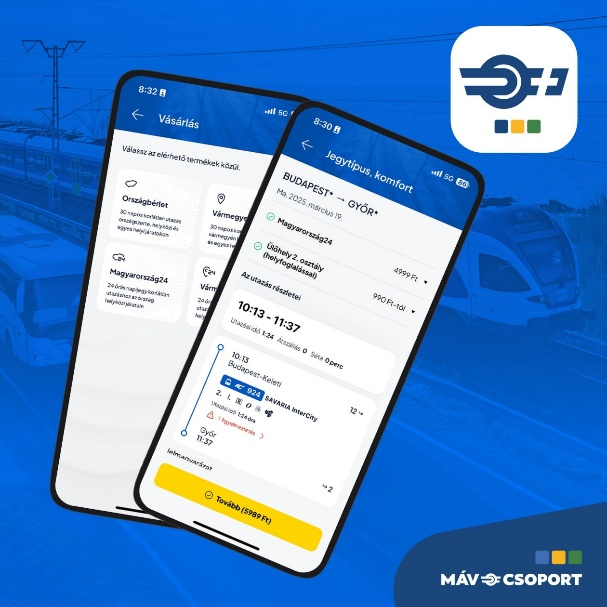

A nyelvtanuló alkalmazás mára világszerte nagyon népszerű lett. Sok embert motivál nap mint nap arra, hogy legalább pár percet foglalkozzon egy új nyelvvel. Az app játékos felépítése miatt olyan, mintha nem is tanulnánk, hanem csak játszanánk.

A leckék rövidek és könnyűek. Van hallás utáni feladat, mondatfordítás, képes választás és kiejtési gyakorlat is. A rendszer figyeli, melyik feladatot rontjuk el, és később újra előhozza, hogy jobban megjegyezzük.
Az egyik legnagyobb vonzereje, hogy pontokat, szinteket és napi streaket ad amit lehet gyűjteni. Ez sokaknak ad plusz motivációt, hiszen jó érzés látni, hogy egyre magasabb szintre jutunk. A napi gyakorlásért még jutalmak is járnak, ami segít kialakítani a rendszeres tanulási szokást.

Persze minden alkalmazásnak vannak korlátai. Ez sem tud mindent megtanítani: a mélyebb nyelvtant és a valódi beszélgetést nem helyettesíti. Viszont nagyon jó kezdés azoknak, akik most vágnak bele, vagy akik szeretnék gyakorolni valamelyik nyelvet.
Összességében ez a játékos nyelvtanuló app könnyen használható, szórakoztató, és sok ember számára tökéletes első lépés egy új nyelv megismeréséhez.
Készítette: Balajti Dániel
Az Instagram egy világszerte használt közösségi média platform, amely elsősorban képek és videók megosztására épül. 2010-ben indult, mára pedig a Meta (korábban Facebook) tulajdonában működik. Fő célja, hogy a felhasználók vizuális formában dokumentálhassák mindennapjaikat, kapcsolatba léphessenek másokkal, és inspirációt találjanak mások tartalmai között.
Az Instagram egyik legfontosabb eleme a Feed, ahol a felhasználók a követettek bejegyzéseit látják. Ezek lehetnek fényképek, videók vagy karusszelek (több képből/videóból álló posztok). A megjelenés sorrendje nem időrendi, hanem egy algoritmus alapján történik, amely figyeli, milyen tartalmak iránt érdeklődik a felhasználó.
A platform egyik legnépszerűbb funkciója a Stories, amely 24 óráig elérhető rövid tartalmakat jelent. Ezek általában spontánabbak, gyorsabbak, és matricákkal, zenével vagy kérdésekkel interaktívvá tehetők. A felhasználók a fontosabb sztorikat „kiemelhetik” a profiljukon.
A Reels a rövid, pörgős videók terepe, amelyet a TikTok térhódítására válaszul vezettek be. A Reelsek óriási organikus elérést biztosíthatnak, mert az algoritmus nem csak követőknek mutatja őket. Emiatt a tartalomgyártók és influencerek egyik legfontosabb eszközévé vált.
A Direct Messages (DM) privát üzenetküldésre szolgál, ahol szövegeket, hangüzeneteket és ideiglenes képeket vagy videókat is lehet küldeni. A felhasználók csoportbeszélgetéseket is létrehozhatnak.
Az Instagram a vállalkozások és márkák számára is kulcsfontosságú felület: az üzleti fiókok statisztikákat, hirdetési lehetőségeket, valamint Shopping funkciót kapnak, amellyel termékeket lehet megjelölni és akár közvetlenül eladni. Emiatt az Instagram az influencer- és online marketing egyik legjelentősebb platformja lett.
A platform nagy figyelmet fordít a biztonságra és adatvédelemre. Elérhető a kétfaktoros hitelesítés, a komment- és üzenetszűrők, a biztonsági figyelmeztetések, valamint a tartalomszűrések is. Emellett eszközök állnak rendelkezésre arra, hogy a felhasználók korlátozzák, kik láthatják vagy kommentálhatják tartalmaikat.
Az Instagram mára nem csupán egy fotómegosztó alkalmazás, hanem egy összetett digitális ökoszisztéma, amely hatással van a divatra, a trendekre, a vállalkozások működésére és a vizuális kultúrára. Egy olyan platform, ahol a kreativitás, a közösség és a kommunikáció egyszerre van jelen, és amely folyamatosan formálja az online jelenlét jövőjét.
Készítette: Takács Sándor
A MÁV+ alkalmazás 2025. áprilisában indult a MÁV Csoport 2025-2026-os „10 VÁLLALÁS” programjának keretei között, aminek célja, hogy javítsa a közösségi közlekedés minőségét, miután a jegy- és bérletek árait jelentősen lecsökkentették. (Ez a 2024-es „ÚJTARIFÁK” program része volt.) Az alkalmazást 1500 „szerencsés” tesztelő ki is próbálhatta még márciusban, mielőtt az app elindult volna.
Az alkalmazásban egyelőre kevesebb funkció található, mint a MÁV appban, de a cég azt ígéri, hogy 2026-ra a régi funkciók is elérhetőek lesznek. Az alkalmazás telepítése és megnyitása után egy kis bemutató fogad minket, amely megmutatja, hogy mire számíthatunk. A bejelentkezési / regisztrációi folyamat jól működik, mostanra már Facebook vagy Google fiókkal is összekapcsolhatjuk a fiókunkat. Sőt, a régi app bejelentkezési adataival is beléphetünk. Ellentétben a régi MÁV-val, itt nem kell minden nap újra belépni, a rendszer a belépésünket követően magától működik.
A belépést követően a „Tervezés” menüpontban találjuk magunkat, ahol lehetőségünk van kiválasztani, hogy honnan hová menjünk, illetve megtekinthetjük az utazástervezési beállításokat is: Egyszerű vagy „Kombinált” közlekedési módot akarunk-e választani, csak klímás járattal akarunk-e utazni, vagy esetleg helybiztosítás nélkül. A „Jegyek” és „Bérletek” menüpontokban találjuk az aktív (és lejárt) jegyeinket- és bérleteinket, valamint vásárolni is itt lehet. Előbbit a tervezés menüpontban tudunk rendelni, utóbbit pedig a vásárlás gombra nyomva. A „Menetrend” menüre tovább haladva használhatjuk a MÁV app lebutított menetrendböngészőjét. (Sajnos az EMIG/VONATINFO itt sem elérhető.) Végül a profilunk alatt találjuk a számlaadatokat, mentett utasokat, bankkártyákat, késési biztosítást, kuponokat, bankszámlaszám módosítási lehetőséget és Widget beállításokat. (Utóbbi hasznos, ha nem akarjuk kivárni a 3-10 másodpercig tartó töltőképernyőt, ha rohanunk a vonat után.)
Összegezve: Az alkalmazás hiányos és sok sebből vérzik, így kénytelenek vagyunk a két appot egyszerre használni. Vannak pozitívumai, de jelenleg nem használható önmagában. Reméljük, 2026-ban több hibajavítás is érkezik. Ezt jó mutatja az értékelés is: 2180+ értékelés a Google Play-en, az app 1,5 csillagra értékelt.
Készítette: Veszprémi Zalán
A Photomath egy alkalmazás, amelyet a Google Playről vagy akár az Appstore-ból is, sőt még a hivatalos webolalról is akár pillanatok alatt le lehet tölteni. Ingyenes így még pénzt sem kell költeni arra, ha valaki ki szeretné próbáni.
Az alkalmazás rengeteg nyelvet támogat, így a világ szinte minden pontján használják az emberek. A sok nyelv között a magyart is támogatja, így hazánkban élő diákok vagy akár felnőttek is használhatják.
Nagyon hasznos alkalmazás, főleg diákoknak. A program képes különböző matematikai feladatokat megoldani pillanatok alatt. Rendkívül jól tud jönni akár dolgozatra való készülés közben, akár versenyre való gyakorlásnál, sőt akár még házi feladat elkészítése utáni önellenőrzésre is tökéletes.
Használata rendkívül, egyszerű. Mikor megnyitod az alkalmazást, egyből egy szkenner fogad, ami várja, hogy beolvasd a feladatot, amire használni szeretnéd. A feladat szövegét viszont nem tudja értelmezni, csakis a matematikai kifejezéseket, ezért erre vigyázz. A beolvasás során az alkalmazás tévedhet, de ez sem akadály, mivel van lehetőséged szerkeszteni a beviteli mezőt. Ekkor bele tudsz írni a műveletbe, és az alkalmazás rengeteg speciális matematikai karakter bevitelében segít az általa használt egyedi billentyűzettel. Ezen meg lehet találni az a legtöbb karaktert az egyszerűbb operátoroktól kezdve a bonyolultabbakig, mint például a logaritmust, a faktoriálist, de tud még függvényeket, szögfüggvényeket és még határértékszámítást is be lehet gépelni, így tényleg bármelyik tanulói korosztálynak megfelel. Az általános iskolás diákoktól kezdve az egyetemi hallgatókig. Amint beolvastad a feladatot, egyből több különböző megoldást is feldob, azért, hogy ki tudd választani azt amelyikre szükséged van az adott pillanatban. Mikor kiválasztottad a megoldást amire szükséged van, akkor leírja neked a megoldás lépéseit. De ez még nem minden. Azont túl, hogy a feladat lépéseit részletesen megmutatja, van egy lehetőség, hogy elmagyarázza. Ekkor nagyon részletesen megmutatja, hogy mi miért működik. A programnak van még egy olyan lehetősége is, hogy szkennelés nélkül meg lehet adni feladatot a programnak. Ehhez az alkalmazás megnyitása után, mikor a szkennelésre vár, a fotózás gomb mellett van lehetőség. Emellett, ha nem egy mostani, hanem egy régebbi feladatot szeretnénk megnézni, akkor van lehetőségünk a galériában lementett képekről feladatokat bevinni a programba. Akkor sem szabad elkeseredni, ha nem teljesen értjük, hogy hogyan kell használni, mert az alkalmazás rendelkezik saját súgó központtal, ami részletesen elmagyarázza, hogy hogyan működik ez a rendkívül hasznos alkalmazás. Mint az elején írtam, a Photomath ingyenes, de van lehetőség benne előfizetést is vásárolni. Bár előfizetés nélkül is teljesen jól használható a program, vannak egyes funkciói, amelyek a Photomath Plus megvásárlása után lesznek elérhetőek. A Plus nagyjából 3300Ft-ba kerül, így ez sem egy hatalmas nagy összeg. Annak, aki nap mint nap használja, biztosan megéri. A program egyik hátránya lehet, hogy nem ismer fel minden problémát. Viszont a Photomath-ot rendszeresen fejlesztik, így nagy eséllyel előbb vagy utóbb egyre több mindent fog tudni felismerni.
Készítette: Holik Bálint